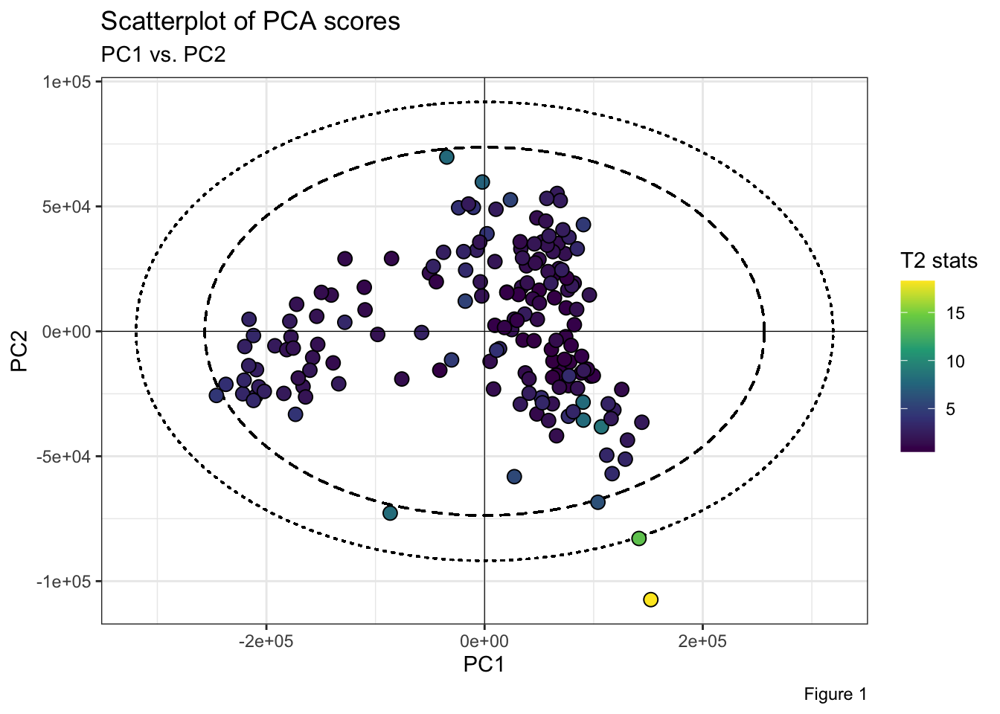
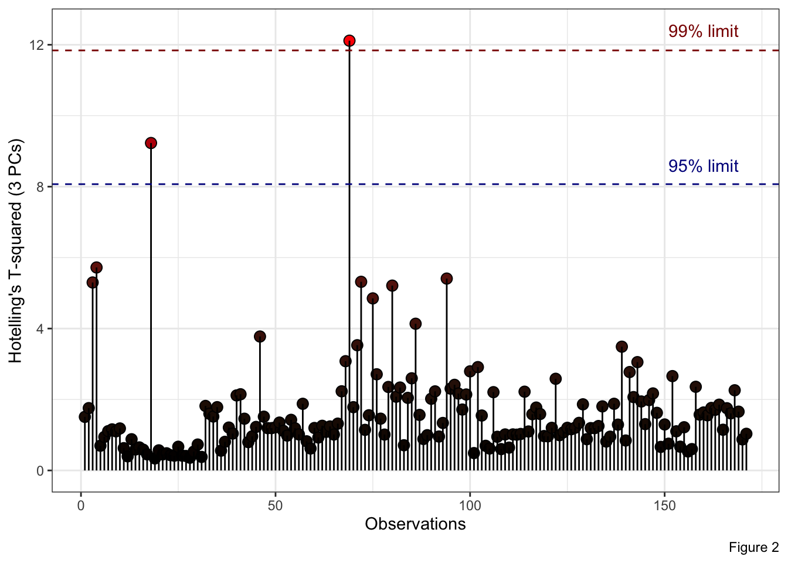
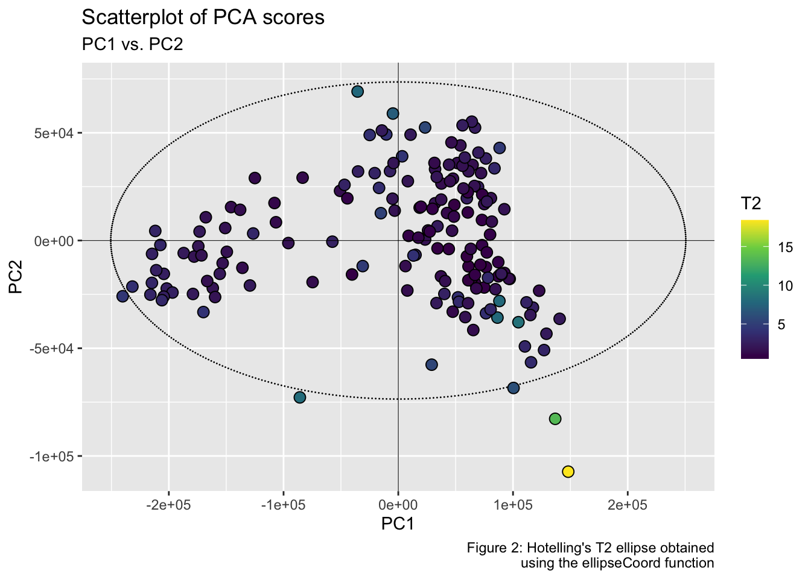
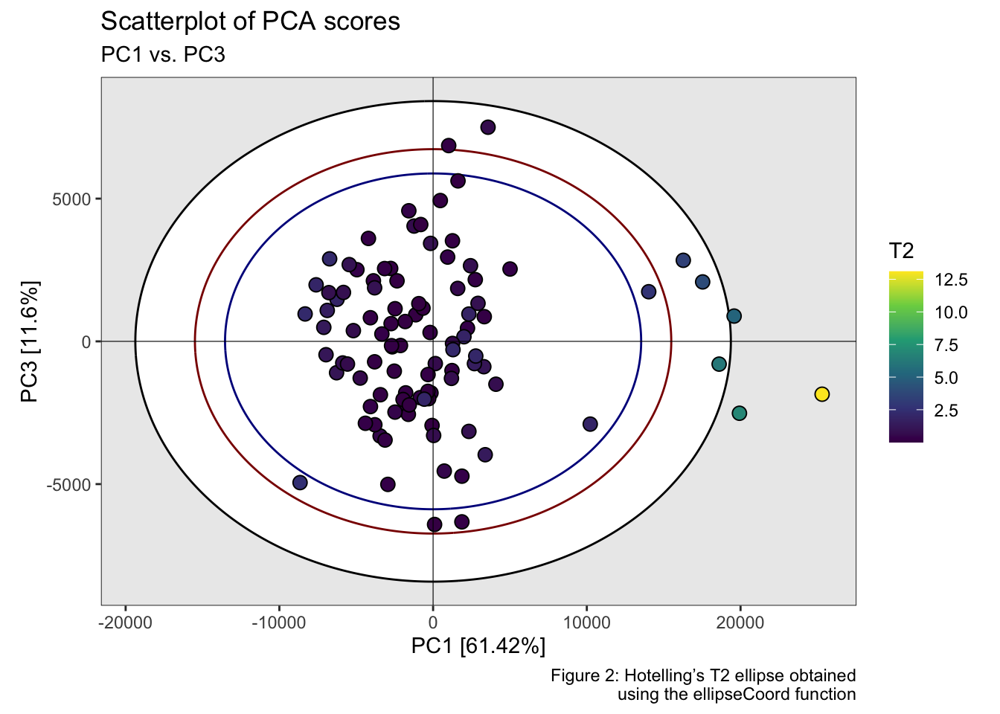

The HotellingEllipse package computes the Hotelling’s T2 statistic to compare multivariate data. For bivariate data, it provides the semi-minor and semi-major axes of a confidence ellipse at 95% and 99% confidence intervals. The package also calculates the x-y coordinate points of Hotelling ellipse at user-defined confidence interval.
Installation
You can install HotellingEllipse from GitHub:
# install.packages("remotes")
remotes::install_github("ChristianGoueguel/HotellingEllipse")Example
Using FactoMineR::PCA() we first perform Principal Component Analysis (PCA) from a LIBS spectral dataset data("specData") and extract the PCA scores. Then, from ellipseParam() we calculate the Hotelling T2 statistic for the first two principal components, and the values of the semi-major and semi-minor axes for drawing the confidence ellipse. And finally, using ggplot2::ggplot() and ggforce::geom_ellipse() we plot the scatterplot of PCA scores as well as the corresponding Hotelling’s T2 ellipse which represents the confidence region for the joint variables at 99% and 95% confidence intervals.
Step 1. Load the packages.
Step 2. Load LIBS dataset into R session.
data("specData")Step 3. Perform principal component analysis.
set.seed(123)
pca_mod <- specData %>%
select(where(is.numeric)) %>%
FactoMineR::PCA(scale.unit = FALSE, graph = FALSE)Step 4. Extract PCA scores.
pca_scores <- pca_mod %>%
pluck("ind", "coord") %>%
as_tibble() %>%
print()
#> # A tibble: 171 x 5
#> Dim.1 Dim.2 Dim.3 Dim.4 Dim.5
#> <dbl> <dbl> <dbl> <dbl> <dbl>
#> 1 144168. -36399. 2228. -670. 13805.
#> 2 118520. -31465. 16300. -20686. -13872.
#> 3 90303. -28356. 31340. -60615. 15157.
#> 4 107107. -38209. 24897. -60366. 19449.
#> 5 74350. -2148. 29814. -8351. 494.
#> 6 97511. -17932. 22254. -15406. -4195.
#> 7 82142. 19297. -34299. -12498. -648.
#> 8 76261. 16566. -34382. -16293. 137.
#> 9 73705. 31091. -22577. -17182. 2438.
#> 10 68042. 25124. -26064. -19389. 6051.
#> # … with 161 more rowsStep 5. Run ellipseParam() for the first two principal components (k = 2). We want to compute the principal axes of the ellipses (denoted a and b) when the first principal component, PC1, is on the x-axis (pcx = 1) and, the second principal component, PC2, is on the y-axis (pcy = 2).
res_2PCs <- ellipseParam(data = pca_scores, k = 2, pcx = 1, pcy = 2)
str(res_2PCs)
#> List of 4
#> $ Tsquared : tibble[,1] [171 × 1] (S3: tbl_df/tbl/data.frame)
#> ..$ statistic: num [1:171] 2.28 2.65 8 8.63 1.05 ...
#> $ Ellipse : tibble[,4] [1 × 4] (S3: tbl_df/tbl/data.frame)
#> ..$ a1: num 319536
#> ..$ b1: num 91816
#> ..$ a2: num 256487
#> ..$ b2: num 73699
#> $ cutoff.99pct: num 9.52
#> $ cutoff.95pct: num 6.14Retrieve ellipse parameters at 99% confidence level.
Retrieve ellipse parameters at 95% confidence level.
Retrieve Hotelling’s T2 statistic (for the first two PCs).
T2 <- pluck(res_2PCs, "Tsquared", "statistic")Step 6. Plot PC1 vs. PC2 scatterplot, with the two corresponding Hotelling’s T2 ellipses. Points inside the two elliptical regions are within the 99% and 95% confidence limits for T2.
pca_scores %>%
ggplot(aes(x = Dim.1, y = Dim.2)) +
ggforce::geom_ellipse(aes(x0 = 0, y0 = 0, a = a1, b = b1, angle = 0), size = .5, linetype = "dotted") +
ggforce::geom_ellipse(aes(x0 = 0, y0 = 0, a = a2, b = b2, angle = 0), size = .5, linetype = "dashed") +
geom_point(aes(fill = T2), shape = 21, size = 3, color = "black") +
scale_fill_viridis_c(option = "viridis") +
geom_hline(yintercept = 0, linetype = "solid", color = "black", size = .2) +
geom_vline(xintercept = 0, linetype = "solid", color = "black", size = .2) +
labs(title = "Scatterplot of PCA scores", subtitle = "PC1 vs. PC2", x = "PC1", y = "PC2", fill = "T2 stats", caption = "Figure 1") +
theme_bw()
Note: The easiest way to analyze and interpret Hotelling’s T2 for more than two principal components, is to plot Observations vs. Hotelling’s T2 where the confidence limits are plotted as a line. Thus, observations below the two lines are within the T2 limits. In the example below, ellipseParam() is ran with the first three principal components (i.e., k = 3).
res_3PCs <- ellipseParam(data = pca_scores, k = 3)
tibble::tibble(
T2 = pluck(res_3PCs, "Tsquared", "statistic"),
obs = 1:nrow(pca_scores)
) %>%
ggplot() +
geom_point(aes(x = obs, y = T2, fill = T2), shape = 21, size = 3, color = "black") +
geom_segment(aes(x = obs, y = T2, xend = obs, yend = 0), size = .5) +
scale_fill_gradient(low = "black", high = "red", guide = "none") +
geom_hline(yintercept = pluck(res_3PCs, "cutoff.99pct"), linetype = "dashed", color = "darkred", size = .5) +
geom_hline(yintercept = pluck(res_3PCs, "cutoff.95pct"), linetype = "dashed", color = "darkblue", size = .5) +
annotate("text", x = 160, y = 12.4, label = "99% limit", color = "darkred") +
annotate("text", x = 160, y = 8.6, label = "95% limit", color = "darkblue") +
labs(x = "Observations", y = "Hotelling's T-squared (3 PCs)", fill = "T2 stats", caption = "Figure 2") +
theme_bw()
Note: Run the function ellipseCoord(), if you want the x and y coordinate points of the confidence ellipse instead. By default the confidence level confi.limit is set at 95%.
xy_coord <- ellipseCoord(
data = pca_scores,
pcx = 1,
pcy = 2,
conf.limit = 0.95,
pts = 200
) %>%
print()
#> # A tibble: 200 x 2
#> x y
#> <dbl> <dbl>
#> 1 256487. 1.06e-12
#> 2 256359. 2.33e+ 3
#> 3 255975. 4.65e+ 3
#> 4 255337. 6.97e+ 3
#> 5 254444. 9.28e+ 3
#> 6 253297. 1.16e+ 4
#> 7 251898. 1.39e+ 4
#> 8 250248. 1.62e+ 4
#> 9 248348. 1.84e+ 4
#> 10 246201. 2.07e+ 4
#> # … with 190 more rows
ggplot() +
ggforce::geom_ellipse(data = xy_coord, aes(x0 = x, y0 = y, a = 1, b = 1, angle = 0), size = .5, linetype = "dashed") +
geom_point(data = pca_scores, aes(x = Dim.1, y = Dim.2, fill = T2), shape = 21, size = 3, color = "black") +
scale_fill_viridis_c(option = "viridis") +
geom_hline(yintercept = 0, linetype = "solid", color = "black", size = .2) +
geom_vline(xintercept = 0, linetype = "solid", color = "black", size = .2) +
labs(title = "Scatterplot of PCA scores", subtitle = "PC1 vs. PC2", x = "PC1", y = "PC2", fill = "T2 stats", caption = "Figure 3") +
theme_bw()
Likewise, we can compute the ellipse x and y coordinates within the PC1-PC3 subspace.
xy_coord_2 <-
ellipseCoord(
data = pca_scores,
pcx = 1,
pcy = 3,
conf.limit = 0.95,
pts = 200
)